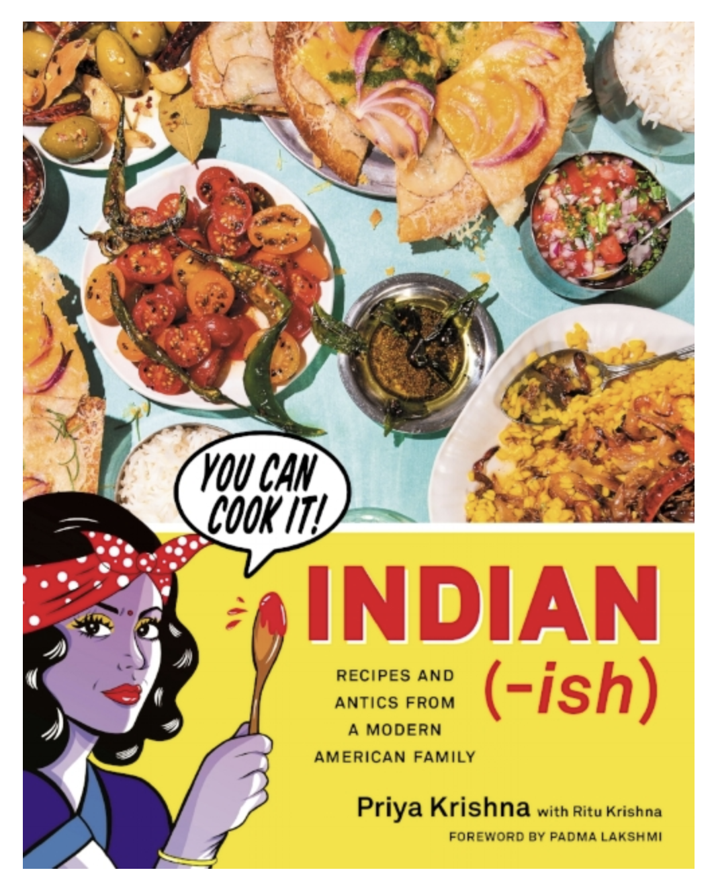
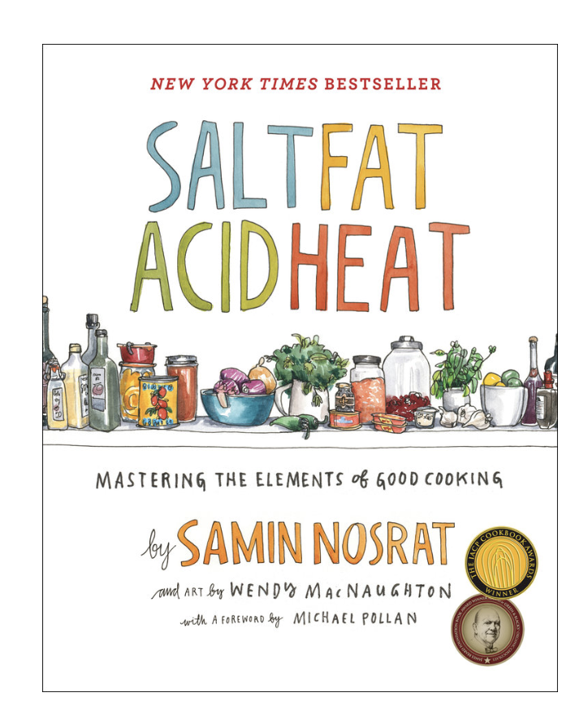

Berkeley Bites
Food to make & Food too good not to buy!
Welcome
Blog Posts
About Us
Resources
Contact Us
Resources
If you want more recomendations of our favorite recipes and restaurants, please look below!
Recipe Books
Desert Person: Clair Saffitz
Recipes and tips beyond just baking in a desert context
A range of recipes from quick and easy to ones fore more advances bakers
ABSOLUTELY DELICIOUS RECIPES by an ICON
Indian-Ish: Priya Krishna
Packed with delciocious indian dishes with a modern twist
Highlights everyday food with accessible and innovative Indian-American recipes
Has a range of recipes from simple to a little more challenging

Salt Fat Acid Heat: Samin Nosrat
Award winning cookbook
Focuses on 4 elements which lead to mastery of cooking
Connected with a show on Netflix

Recipe Magazines/Websites
bon appétit
Monthly American food and entertaining magazine
Contains recipes, entertaining ideas, restaurant recommendations, and wine reviews
Includes a diverse range of cuisines for all different levels
Food & Wine
Cooking and food magazine that serves as an authoritative source on the modern culinary landscape
More focused on those with luxurious tastes and a strong appreciation of good food and drink
Offers content across their magazine, website, social platforms, premium events
Tasty
Food network for the new generation
Includes all types of food related content focused on efficiency, cost and quality
Diverse platform for people of all backgrounds to gain culinary expertise
Selected Restaurant Menus
Imm Thai
Bongo Burger
Cheese n' Stuff
Marugame Udon
La Val's Pizza
Cheese Board Pizza